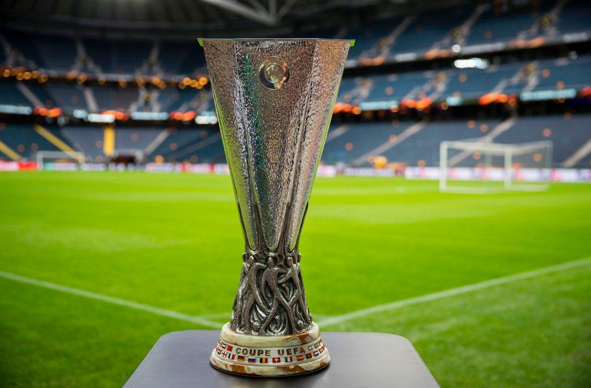

UEFA EUROPA LEAGUE

La Liga Europa de la UEFA es una competencia organizada por la UEFA la cual fue iniciada en 1971, es un nivel mas bajo que la Champions.
RANKING DE MAXIMOS GANADORES
| EQUIPO | COPAS |
|---|---|
| Sevilla (ESP) | 6 |
| Inter (ITA) | 3 |
| Juventus (ITA) | 3 |
| Liverpool (ING) | 3 |
| Atletico Madrid (ESP) | 3 |
| Borussia Mönchengladbach (ALE) | 2 |
| Tottenham (ING) | 2 |
| Real Madrid (ESP) | 2 |
| Göteborg (SUE) | 2 |
| Parma (ITA) | 2 |
| Feyenoord (HOL) | 2 |
| Chelsea (ING) | 2 |
| Porto (POR) | 2 |
| Frankfurt (ALE) | 2 |
| Anderlecht (BEL) | 1 |
| Ajax (HOL) | 1 |
| Manchester United (ING) | 1 |
| PSV (HOL) | 1 |
| Ipswich Towm (ING) | 1 |
| Bayern Leverkusen (ALE) | 1 |
| Napoli (ITA) | 1 |
| Bayern Munich (ALE) | 1 |
| Schalke 04 (ALE) | 1 |
| Galatasaray (TUR) | 1 |
| Valencia (ESP) | 1 |
| CSKA Moscu (RUS) | 1 |
| Zenit (RUS) | 1 |
| Shajtar Donetsk (UCR) | 1 |
| Villareal (ESP) | 1 |
TODOS LOS GANADORES
| AÑO | EQUIPO |
|---|---|
| 2021/22 | Frankfurt (2) |
| 2020/21 | Villareal (1) |
| 2019/20 | Sevilla (6) |
| 2018/19 | Chelsea (2) |
| 2017/18 | Atletico Madrid (3) |
| 2016/17 | Manchester United (1) |
| 2015/16 | Sevilla (5) |
| 2014/15 | Sevilla (4) |
| 2013/14 | Sevilla (3) |
| 2012/13 | Chelsea (1) |
| 2011/12 | Atletico Madrid (2) |
| 2010/11 | Porto (2) |
| 2009/10 | Atletico Madrid (1) |
| 2008/09 | Shajtar Donetsk (1) |
| 2007/08 | Zenit (1) |
| 2006/07 | Sevilla (2) |
| 2005/06 | Sevilla (1) |
| 2004/05 | CSKA Moscu (1) |
| 2003/04 | Valencia (1) |
| 2002/03 | Porto (1) |
| 2001/02 | Feyenoord (2) |
| 2000/01 | Liverpool (3) |
| 1999/00 | Galatasaray (1) |
| 1998/99 | Parma (2) |
| 1997/98 | Inter (3) |
| 1996/97 | Schalke 04 (1) |
| 1995/96 | Bayern Munich (1) |
| 1994/95 | Parma (1) |
| 1993/94 | Inter (2) |
| 1992/93 | Juventus (2) |
| 1991/92 | Ajax (1) |
| 1990/91 | Inter (1) |
| 1989/90 | Juventus (1) |
| 1988/89 | Napoli (1) |
| 1987/88 | Bayern Leverkusen (1) |
| 1986/87 | Göteborg (2) |
| 1985/86 | Real Madrid (2) |
| 1984/85 | Real Madrid (1) |
| 1983/84 | Tottenham (2) |
| 1982/83 | Anderlecht (1) |
| 1981/82 | Göteborg (1) |
| 1980/81 | Ipswich Town (1) |
| 1979/80 | Frankfurt (1) |
| 1978/79 | Borussia Mönchengladbach (2) |
| 1977/78 | PSV (1) |
| 1976/77 | Juventus (1) |
| 1975/76 | Liverpool (2) |
| 1974/75 | Borussia Mönchengladbach (1) |
| 1973/74 | Feyenoord (1) |
| 1972/73 | Liverpool (1) |
| 1971/72 | Tottenham (1) |